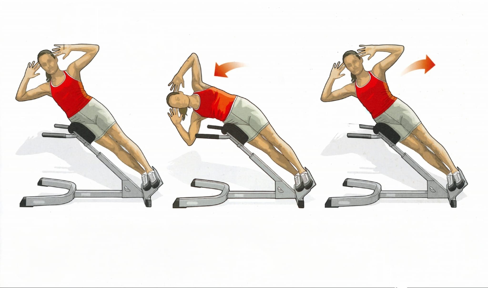

Seitbeuge (römische Lage)

Ausgangsposition
● Stelle die römische Liege so ein, dass sich das Polster auf Hüfthöhe befindet
● Stelle dich nun seitlich auf die Liege, wie in der Grafik gezeigt
Ausführung
Beuge dich seitlich richtung Boden, dies nur so weit, wie es für dich angenehm ist. Halte dabei deine Beine gestreckt.
Rückführung
Kehre nun in die aufrechte Ausgangsposition zurück.